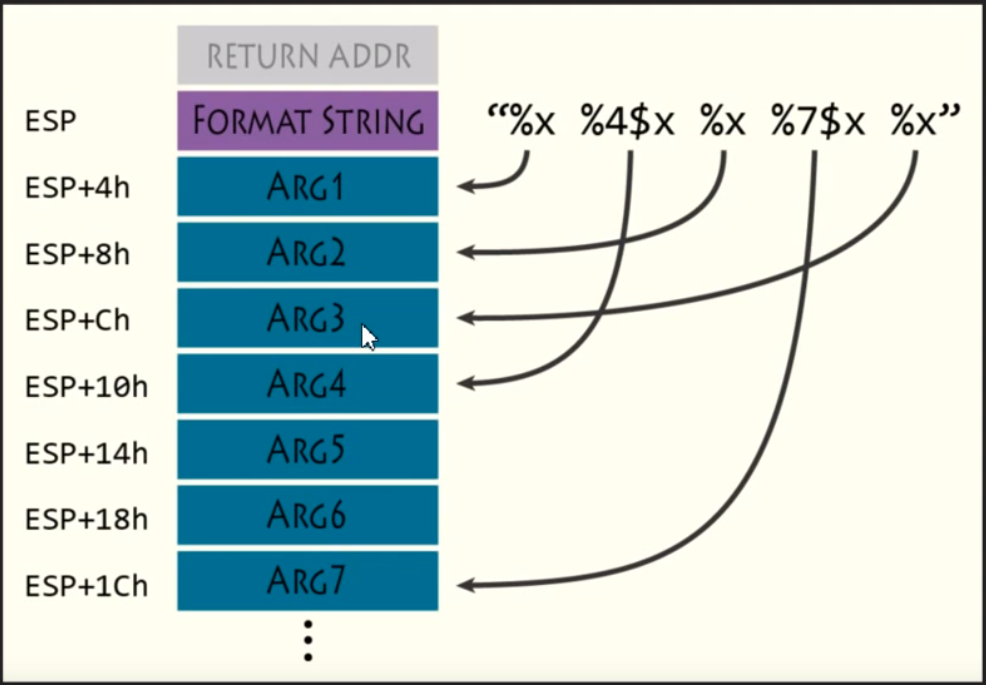
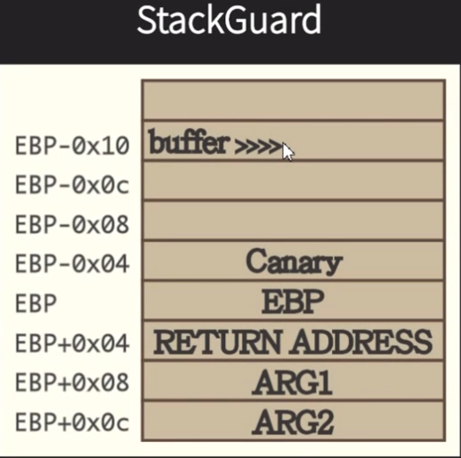
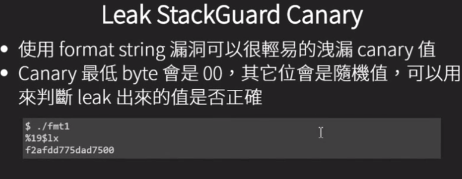
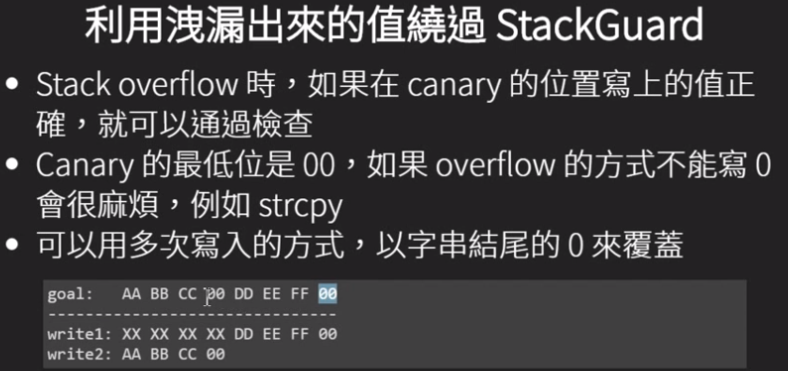

NTU STCS 2016学习笔记 0x04 Format String
Format String
- 在输出火字符串处理函数中用来表示输出的字符串格式
- 在以下的”%s %d”即为format string
printf("%s %d\n", str, a); |
Format String Vulnerablility
- 错误的使用方式，直接将使用者的输入作为fmt使用
- 将printf(“%s”, str)，写成gets(str);printf(str);
- 此类错误不易发现，因为如果没有测试特殊input执行结果不变
fmt使用方式
printf("%2$*1$d", width, num); |
- %2$制定要以%d输出的是第几个参数
- 1$制定要作为输出的长度是第几个参数
- width = 10,num = 5时相当于printf(“%10d”, 5)

例子:fmt1
source code
|
fmt漏洞成因
- format string可以被攻击者的输入人以控制，而printf本身不会检查后面有几个参数
- 使用%x会造成stack上的info leak
- 使用$控制要leak的位置
PS.： x64的程序使用%lx
leak libc base
- 程序执行起点为_start，把main作为参数传入__libc_start_main
- __libc_start_main会先完成初始化造作，之后call main函数
- main的ret addr指向libc内部，且存放在stack上的值可以用%x泄露出来
- leak出来的位数ec5和return会libc里的位置一致，但由于ASLR的关系使得高位随机
- 会return的位置会在call exit前面一些
$ ./fmt1 |
stackguard(CANARY)
- 编译器对stack overflow的一种保护机制
- 在call函数时在stack上放的值
- 函数return时先检查CANARY是否被修改


Leak StackGuard Canary

利用leak canary攻击

本博客所有文章除特别声明外，均采用 CC BY-NC-SA 4.0 许可协议。转载请注明来自 Kur0's Blog！
相关推荐


评论